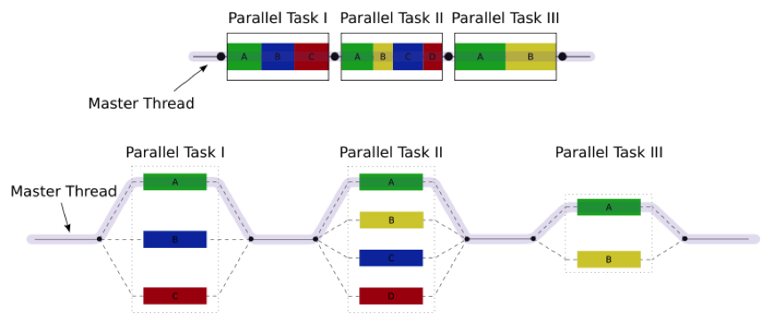
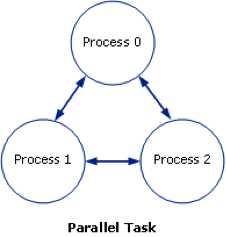

Multi core jobs/Parallel Computing#
Why Parallel Programming?#
There are two important motivations to engage in parallel programming.
-
Firstly, the need to decrease the time to solution: distributing your code over C cores holds the promise of speeding up execution times by a factor C. All modern computers (and probably even your smartphone) are equipped with multi-core processors capable of parallel processing.
-
The second reason is problem size: distributing your code over N nodes increases the available memory by a factor N, and thus holds the promise of being able to tackle problems which are N times bigger.
On a desktop computer, this enables a user to run multiple programs and the operating system simultaneously. For scientific computing, this means you have the ability in principle of splitting up your computations into groups and running each group on its own core.
There are multiple different ways to achieve parallel programming. The table below gives a (non-exhaustive) overview of problem independent approaches to parallel programming. In addition there are many problem specific libraries that incorporate parallel capabilities. The next three sections explore some common approaches: (raw) threads, OpenMP and MPI.
| Tool | Available languages binding | Limitations |
|---|---|---|
| Raw threads (pthreads, boost::threading, ...) | Threading libraries are available for all common programming languages | Threading libraries are available for all common programming languages & Threads are limited to shared memory systems. They are more often used on single node systems rather than for HPC. Thread management is hard. |
| OpenMP | Fortran/C/C++ | Limited to shared memory systems, but large shared memory systems for HPC are not uncommon (e.g., SGI UV). Loops and task can be parallelized by simple insertion of compiler directives. Under the hood threads are used. Hybrid approaches exist which use OpenMP to parallelize the work load on each node and MPI (see below) for communication between nodes. |
| Lightweight threads with clever scheduling, Intel TBB, Intel Cilk Plus | C/C++ | Limited to shared memory systems, but may be combined with MPI. Thread management is taken care of by a very clever scheduler enabling the programmer to focus on parallelization itself. Hybrid approaches exist which use TBB and/or Cilk Plus to parallelise the work load on each node and MPI (see below) for communication between nodes. |
| MPI | Fortran/C/C++, Python | Applies to both distributed and shared memory systems. Cooperation between different nodes or cores is managed by explicit calls to library routines handling communication routines. |
| Global Arrays library | C/C++, Python | Mimics a global address space on distributed memory systems, by distributing arrays over many nodes and one sided communication. This library is used a lot for chemical structure calculation codes and was used in one of the first applications that broke the PetaFlop barrier. |
Tip
You can request more nodes/cores by adding following line to your run script.
#PBS -l nodes=2:ppn=10
Warning
Just requesting more nodes and/or cores does not mean that your job will automatically run faster. You can find more about this here.
Parallel Computing with threads#
Multi-threading is a widespread programming and execution model that allows multiple threads to exist within the context of a single process. These threads share the process' resources, but are able to execute independently. The threaded programming model provides developers with a useful abstraction of concurrent execution. Multi-threading can also be applied to a single process to enable parallel execution on a multiprocessing system.

This advantage of a multithreaded program allows it to operate faster on computer systems that have multiple CPUs or across a cluster of machines --- because the threads of the program naturally lend themselves to truly concurrent execution. In such a case, the programmer needs to be careful to avoid race conditions, and other non-intuitive behaviours. In order for data to be correctly manipulated, threads will often need to synchronise in time in order to process the data in the correct order. Threads may also require mutually exclusive operations (often implemented using semaphores) in order to prevent common data from being simultaneously modified, or read while in the process of being modified. Careless use of such primitives can lead to deadlocks.
Threads are a way that a program can spawn concurrent units of processing that can then be delegated by the operating system to multiple processing cores. Clearly the advantage of a multithreaded program (one that uses multiple threads that are assigned to multiple processing cores) is that you can achieve big speedups, as all cores of your CPU (and all CPUs if you have more than one) are used at the same time.
Here is a simple example program that spawns 5 threads, where each one runs a simple function that only prints "Hello from thread".
Go to the example directory:
cd ~/examples/Multi-core-jobs-Parallel-Computing
Note
If the example directory is not yet present, copy it to your home directory:
cp -r /apps/gent/tutorials/Intro-HPC/examples ~/
Study the example first:
/*
* VSC : Flemish Supercomputing Centre
* Tutorial : Introduction to HPC
* Description: Showcase of working with threads
*/
#include <stdio.h>
#include <stdlib.h>
#include <pthread.h>
#define NTHREADS 5
void *myFun(void *x)
{
int tid;
tid = *((int *) x);
printf("Hello from thread %d!\n", tid);
return NULL;
}
int main(int argc, char *argv[])
{
pthread_t threads[NTHREADS];
int thread_args[NTHREADS];
int rc, i;
/* spawn the threads */
for (i=0; i<NTHREADS; ++i)
{
thread_args[i] = i;
printf("spawning thread %d\n", i);
rc = pthread_create(&threads[i], NULL, myFun, (void *) &thread_args[i]);
}
/* wait for threads to finish */
for (i=0; i<NTHREADS; ++i) {
rc = pthread_join(threads[i], NULL);
}
return 1;
}
And compile it (whilst including the thread library) and run and test it on the login-node:
$ module load GCC
$ gcc -o T_hello T_hello.c -lpthread
$ ./T_hello
spawning thread 0
spawning thread 1
spawning thread 2
Hello from thread 0!
Hello from thread 1!
Hello from thread 2!
spawning thread 3
spawning thread 4
Hello from thread 3!
Hello from thread 4!
Now, run it on the cluster and check the output:
$ qsub T_hello.pbs
123456
$ more T_hello.pbs.o123456
spawning thread 0
spawning thread 1
spawning thread 2
Hello from thread 0!
Hello from thread 1!
Hello from thread 2!
spawning thread 3
spawning thread 4
Hello from thread 3!
Hello from thread 4!
Tip
If you plan engaging in parallel programming using threads, this book may prove useful: Professional Multicore Programming: Design and Implementation for C++ Developers. Cameron Hughes and Tracey Hughes. Wrox 2008.
Parallel Computing with OpenMP#
OpenMP is an API that implements a multi-threaded, shared memory form of parallelism. It uses a set of compiler directives (statements that you add to your code and that are recognised by your Fortran/C/C++ compiler if OpenMP is enabled or otherwise ignored) that are incorporated at compile-time to generate a multi-threaded version of your code. You can think of Pthreads (above) as doing multi-threaded programming "by hand", and OpenMP as a slightly more automated, higher-level API to make your program multithreaded. OpenMP takes care of many of the low-level details that you would normally have to implement yourself, if you were using Pthreads from the ground up.
An important advantage of OpenMP is that, because it uses compiler directives, the original serial version stays intact, and minimal changes (in the form of compiler directives) are necessary to turn a working serial code into a working parallel code.
Here is the general code structure of an OpenMP program:
#include <omp.h>
main () {
int var1, var2, var3;
// Serial code
// Beginning of parallel section. Fork a team of threads.
// Specify variable scoping
#pragma omp parallel private(var1, var2) shared(var3)
{
// Parallel section executed by all threads
// All threads join master thread and disband
}
// Resume serial code
}
Private versus Shared variables#
By using the private() and shared() clauses, you can specify variables within the parallel region as being shared, i.e., visible and accessible by all threads simultaneously, or private, i.e., private to each thread, meaning each thread will have its own local copy. In the code example below for parallelising a for loop, you can see that we specify the thread_id and nloops variables as private.
Parallelising for loops with OpenMP#
Parallelising for loops is really simple (see code below). By default, loop iteration counters in OpenMP loop constructs (in this case the i variable) in the for loop are set to private variables.
/*
* VSC : Flemish Supercomputing Centre
* Tutorial : Introduction to HPC
* Description: Showcase program for OMP loops
*/
/* OpenMP_loop.c */
#include <stdio.h>
#include <omp.h>
int main(int argc, char **argv)
{
int i, thread_id, nloops;
#pragma omp parallel private(thread_id, nloops)
{
nloops = 0;
#pragma omp for
for (i=0; i<1000; ++i)
{
++nloops;
}
thread_id = omp_get_thread_num();
printf("Thread %d performed %d iterations of the loop.\n", thread_id, nloops );
}
return 0;
}
And compile it (whilst including the "openmp" library) and run and test it on the login-node:
$ module load GCC
$ gcc -fopenmp -o omp1 omp1.c
$ ./omp1
Thread 6 performed 125 iterations of the loop.
Thread 7 performed 125 iterations of the loop.
Thread 5 performed 125 iterations of the loop.
Thread 4 performed 125 iterations of the loop.
Thread 0 performed 125 iterations of the loop.
Thread 2 performed 125 iterations of the loop.
Thread 3 performed 125 iterations of the loop.
Thread 1 performed 125 iterations of the loop.
Now run it in the cluster and check the result again.
$ qsub omp1.pbs
$ cat omp1.pbs.o*
Thread 1 performed 125 iterations of the loop.
Thread 4 performed 125 iterations of the loop.
Thread 3 performed 125 iterations of the loop.
Thread 0 performed 125 iterations of the loop.
Thread 5 performed 125 iterations of the loop.
Thread 7 performed 125 iterations of the loop.
Thread 2 performed 125 iterations of the loop.
Thread 6 performed 125 iterations of the loop.
Critical Code#
Using OpenMP you can specify something called a "critical" section of code. This is code that is performed by all threads, but is only performed one thread at a time (i.e., in serial). This provides a convenient way of letting you do things like updating a global variable with local results from each thread, and you don't have to worry about things like other threads writing to that global variable at the same time (a collision).
/*
* VSC : Flemish Supercomputing Centre
* Tutorial : Introduction to HPC
* Description: OpenMP Test Program
*/
#include <stdio.h>
#include <omp.h>
int main(int argc, char *argv[])
{
int i, thread_id;
int glob_nloops, priv_nloops;
glob_nloops = 0;
// parallelize this chunk of code
#pragma omp parallel private(priv_nloops, thread_id)
{
priv_nloops = 0;
thread_id = omp_get_thread_num();
// parallelize this for loop
#pragma omp for
for (i=0; i<100000; ++i)
{
++priv_nloops;
}
// make this a "critical" code section
#pragma omp critical
{
printf("Thread %d is adding its iterations (%d) to sum (%d), ", thread_id, priv_nloops, glob_nloops);
glob_nloops += priv_nloops;
printf("total is now %d.\n", glob_nloops);
}
}
printf("Total # loop iterations is %d\n", glob_nloops);
return 0;
}
And compile it (whilst including the "openmp" library) and run and test it on the login-node:
$ module load GCC
$ gcc -fopenmp -o omp2 omp2.c
$ ./omp2
Thread 3 is adding its iterations (12500) to sum (0), total is now 12500.
Thread 7 is adding its iterations (12500) to sum (12500), total is now 25000.
Thread 5 is adding its iterations (12500) to sum (25000), total is now 37500.
Thread 6 is adding its iterations (12500) to sum (37500), total is now 50000.
Thread 2 is adding its iterations (12500) to sum (50000), total is now 62500.
Thread 4 is adding its iterations (12500) to sum (62500), total is now 75000.
Thread 1 is adding its iterations (12500) to sum (75000), total is now 87500.
Thread 0 is adding its iterations (12500) to sum (87500), total is now 100000.
Total # loop iterations is 100000
Now run it in the cluster and check the result again.
$ qsub omp2.pbs
$ cat omp2.pbs.o*
Thread 2 is adding its iterations (12500) to sum (0), total is now 12500.
Thread 0 is adding its iterations (12500) to sum (12500), total is now 25000.
Thread 1 is adding its iterations (12500) to sum (25000), total is now 37500.
Thread 4 is adding its iterations (12500) to sum (37500), total is now 50000.
Thread 7 is adding its iterations (12500) to sum (50000), total is now 62500.
Thread 3 is adding its iterations (12500) to sum (62500), total is now 75000.
Thread 5 is adding its iterations (12500) to sum (75000), total is now 87500.
Thread 6 is adding its iterations (12500) to sum (87500), total is now 100000.
Total # loop iterations is 100000
Reduction#
Reduction refers to the process of combining the results of several sub-calculations into a final result. This is a very common paradigm (and indeed the so-called "map-reduce" framework used by Google and others is very popular). Indeed we used this paradigm in the code example above, where we used the "critical code" directive to accomplish this. The map-reduce paradigm is so common that OpenMP has a specific directive that allows you to more easily implement this.
/*
* VSC : Flemish Supercomputing Centre
* Tutorial : Introduction to HPC
* Description: OpenMP Test Program
*/
#include <stdio.h>
#include <omp.h>
int main(int argc, char *argv[])
{
int i, thread_id;
int glob_nloops, priv_nloops;
glob_nloops = 0;
// parallelize this chunk of code
#pragma omp parallel private(priv_nloops, thread_id) reduction(+:glob_nloops)
{
priv_nloops = 0;
thread_id = omp_get_thread_num();
// parallelize this for loop
#pragma omp for
for (i=0; i<100000; ++i)
{
++priv_nloops;
}
glob_nloops += priv_nloops;
}
printf("Total # loop iterations is %d\n", glob_nloops);
return 0;
}
And compile it (whilst including the "openmp" library) and run and test it on the login-node:
$ module load GCC
$ gcc -fopenmp -o omp3 omp3.c
$ ./omp3
Total # loop iterations is 100000
Now run it in the cluster and check the result again.
$ qsub omp3.pbs
$ cat omp3.pbs.o*
Total # loop iterations is 100000
Other OpenMP directives#
There are a host of other directives you can issue using OpenMP.
Some other clauses of interest are:
-
barrier: each thread will wait until all threads have reached this point in the code, before proceeding
-
nowait: threads will not wait until everybody is finished
-
schedule(type, chunk) allows you to specify how tasks are spawned out to threads in a for loop. There are three types of scheduling you can specify
-
if: allows you to parallelise only if a certain condition is met
-
... and a host of others
Tip
If you plan engaging in parallel programming using OpenMP, this book may prove useful: Using OpenMP - Portable Shared Memory Parallel Programming. By Barbara Chapman Gabriele Jost and Ruud van der Pas Scientific and Engineering Computation. 2005.
Parallel Computing with MPI#
The Message Passing Interface (MPI) is a standard defining core syntax and semantics of library routines that can be used to implement parallel programming in C (and in other languages as well). There are several implementations of MPI such as Open MPI, Intel MPI, M(VA)PICH and LAM/MPI.
In the context of this tutorial, you can think of MPI, in terms of its complexity, scope and control, as sitting in between programming with Pthreads, and using a high-level API such as OpenMP. For a Message Passing Interface (MPI) application, a parallel task usually consists of a single executable running concurrently on multiple processors, with communication between the processes. This is shown in the following diagram:

The process numbers 0, 1 and 2 represent the process rank and have greater or less significance depending on the processing paradigm. At the minimum, Process 0 handles the input/output and determines what other processes are running.
The MPI interface allows you to manage allocation, communication, and synchronisation of a set of processes that are mapped onto multiple nodes, where each node can be a core within a single CPU, or CPUs within a single machine, or even across multiple machines (as long as they are networked together).
One context where MPI shines in particular is the ability to easily take advantage not just of multiple cores on a single machine, but to run programs on clusters of several machines. Even if you don't have a dedicated cluster, you could still write a program using MPI that could run your program in parallel, across any collection of computers, as long as they are networked together.
Here is a "Hello World" program in MPI written in C. In this example, we send a "Hello" message to each processor, manipulate it trivially, return the results to the main process, and print the messages.
Study the MPI-programme and the PBS-file:
/*
* VSC : Flemish Supercomputing Centre
* Tutorial : Introduction to HPC
* Description: "Hello World" MPI Test Program
*/
#include <stdio.h>
#include <mpi.h>
#include <mpi.h>
#include <stdio.h>
#include <string.h>
#define BUFSIZE 128
#define TAG 0
int main(int argc, char *argv[])
{
char idstr[32];
char buff[BUFSIZE];
int numprocs;
int myid;
int i;
MPI_Status stat;
/* MPI programs start with MPI_Init; all 'N' processes exist thereafter */
MPI_Init(&argc,&argv);
/* find out how big the SPMD world is */
MPI_Comm_size(MPI_COMM_WORLD,&numprocs);
/* and this processes' rank is */
MPI_Comm_rank(MPI_COMM_WORLD,&myid);
/* At this point, all programs are running equivalently, the rank
distinguishes the roles of the programs in the SPMD model, with
rank 0 often used specially... */
if(myid == 0)
{
printf("%d: We have %d processors\n", myid, numprocs);
for(i=1;i<numprocs;i++)
{
sprintf(buff, "Hello %d! ", i);
MPI_Send(buff, BUFSIZE, MPI_CHAR, i, TAG, MPI_COMM_WORLD);
}
for(i=1;i<numprocs;i++)
{
MPI_Recv(buff, BUFSIZE, MPI_CHAR, i, TAG, MPI_COMM_WORLD, &stat);
printf("%d: %s\n", myid, buff);
}
}
else
{
/* receive from rank 0: */
MPI_Recv(buff, BUFSIZE, MPI_CHAR, 0, TAG, MPI_COMM_WORLD, &stat);
sprintf(idstr, "Processor %d ", myid);
strncat(buff, idstr, BUFSIZE-1);
strncat(buff, "reporting for duty", BUFSIZE-1);
/* send to rank 0: */
MPI_Send(buff, BUFSIZE, MPI_CHAR, 0, TAG, MPI_COMM_WORLD);
}
/* MPI programs end with MPI Finalize; this is a weak synchronization point */
MPI_Finalize();
return 0;
}
#!/bin/bash
#PBS -N mpihello
#PBS -l walltime=00:05:00
# assume a 40 core job
#PBS -l nodes=2:ppn=20
# make sure we are in the right directory in case writing files
cd $PBS_O_WORKDIR
# load the environment
module load intel
mpirun ./mpi_hello
and compile it:
$ module load intel
$ mpiicc -o mpi_hello mpi_hello.c
mpiicc is a wrapper of the Intel C++ compiler icc to compile MPI programs (see the chapter on compilation for details).
Run the parallel program:
$ qsub mpi_hello.pbs
$ ls -l
total 1024
-rwxrwxr-x 1 vsc40000 8746 Sep 16 14:19 mpi_hello*
-rw-r--r-- 1 vsc40000 1626 Sep 16 14:18 mpi_hello.c
-rw------- 1 vsc40000 0 Sep 16 14:22 mpi_hello.o123456
-rw------- 1 vsc40000 697 Sep 16 14:22 mpi_hello.o123456
-rw-r--r-- 1 vsc40000 304 Sep 16 14:22 mpi_hello.pbs
$ cat mpi_hello.o123456
0: We have 16 processors
0: Hello 1! Processor 1 reporting for duty
0: Hello 2! Processor 2 reporting for duty
0: Hello 3! Processor 3 reporting for duty
0: Hello 4! Processor 4 reporting for duty
0: Hello 5! Processor 5 reporting for duty
0: Hello 6! Processor 6 reporting for duty
0: Hello 7! Processor 7 reporting for duty
0: Hello 8! Processor 8 reporting for duty
0: Hello 9! Processor 9 reporting for duty
0: Hello 10! Processor 10 reporting for duty
0: Hello 11! Processor 11 reporting for duty
0: Hello 12! Processor 12 reporting for duty
0: Hello 13! Processor 13 reporting for duty
0: Hello 14! Processor 14 reporting for duty
0: Hello 15! Processor 15 reporting for duty
The runtime environment for the MPI implementation used (often called mpirun or mpiexec) spawns multiple copies of the program, with the total number of copies determining the number of process ranks in MPI_COMM_WORLD, which is an opaque descriptor for communication between the set of processes. A single process, multiple data (SPMD = Single Program, Multiple Data) programming model is thereby facilitated, but not required; many MPI implementations allow multiple, different, executables to be started in the same MPI job. Each process has its own rank, the total number of processes in the world, and the ability to communicate between them either with point-to-point (send/receive) communication, or by collective communication among the group. It is enough for MPI to provide an SPMD-style program with MPI_COMM_WORLD, its own rank, and the size of the world to allow algorithms to decide what to do. In more realistic situations, I/O is more carefully managed than in this example. MPI does not guarantee how POSIX I/O would actually work on a given system, but it commonly does work, at least from rank 0.
MPI uses the notion of process rather than processor. Program copies are mapped to processors by the MPI runtime. In that sense, the parallel machine can map to 1 physical processor, or N where N is the total number of processors available, or something in between. For maximum parallel speedup, more physical processors are used. This example adjusts its behaviour to the size of the world N, so it also seeks to scale to the runtime configuration without compilation for each size variation, although runtime decisions might vary depending on that absolute amount of concurrency available.
Tip
mpirun does not always do the optimal core pinning and requires a few
extra arguments to be the most efficient possible on a given system. At
Ghent we have a wrapper around mpirun called mympirun. See for more
information.
You will generally just start an MPI program on the by using mympirun
instead of
mpirun -n <nr of cores> <--other settings> <--other optimisations>
Tip
If you plan engaging in parallel programming using MPI, this book may prove useful: Parallel Programming with MPI. Peter Pacheo. Morgan Kaufmann. 1996.